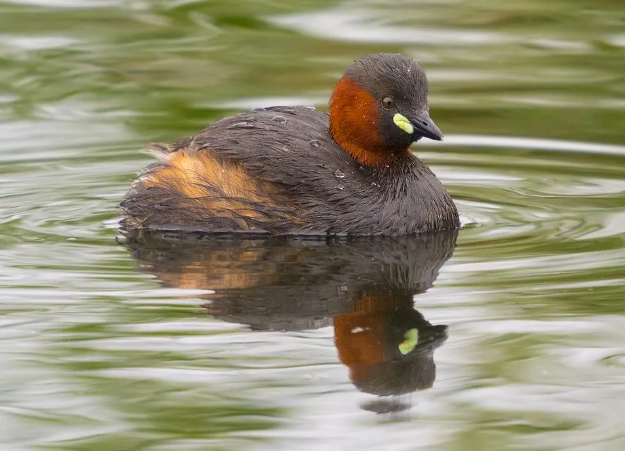

鸟类 · 动物界
小鸊鷉 Tachybaptus ruficollis

中国最常见的小型潜鸟之一，体形圆润、尾极短，常在池塘和湖泊中潜水捕鱼，受惊时几乎全身没入水中。
- 分类
- 门脊索动物门纲鸟纲目䴙䴘目科䴙䴘科属小䴙䴘属
- 栖息环境
- 池塘、湖泊、水库、水田和缓流河道，喜在有水草的水域活动
- 地理分布
- 欧亚大陆、非洲和澳大利亚，中国各地水域均有分布
- 保护级别
- IUCN 无危（LC）；中国“三有”保护动物
物种志
小鸊鷉体长 25–29 cm，体重 130–250 g。它的体形圆润，尾羽极短，看起来几乎没有尾巴；繁殖期头部和颈部呈栗红色，喙基有一块黄白色斑，体羽深褐色；非繁殖期羽色变为灰褐，喉部白色。它的腿短而靠后，适合潜水。
小鸊鷉广泛分布于欧亚大陆、非洲和澳大利亚的池塘、湖泊、水库、水田和河流，中国各地都有分布。它们以小鱼、虾、水生昆虫和蝌蚪为食，常在水面停留片刻后突然潜入水中，受惊时几乎全身没入水中，只露出头和喙。繁殖期在水草中筑浮巢，每窝产卵 4–6 枚，孵化 20–23 天。小鸊鷉目前被列为无危物种，中国将其列入“三有”保护名录。
形态与习性
- 食性小鱼、虾、水生昆虫和蝌蚪
- 体长25–29 cm
- 体重130–250 g
- 繁殖每窝 4–6 枚卵，孵化 20–23 天
- 习性受惊时几乎全身没入水中，只露出头和喙
- 寿命野外约 5–8 年
趣味知识
- 小鸊鷉的尾羽极短，看起来几乎没有尾巴，因此被称为“水葫芦”。
- 受惊时它会把身体沉入水中，只露出头和喙，像潜水艇一样。
- 它在中国各地的池塘和湖泊中都很常见，是最容易观察到的水鸟之一。